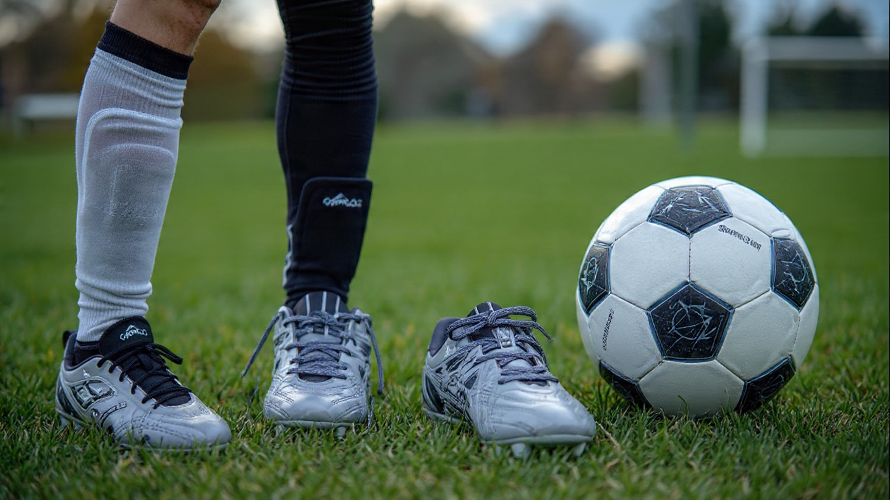

Introduction to Soccer
Soccer, also known as football in many countries, is the most popular sport in the world. Millions of people watch and play soccer every day, from local games to international tournaments.
Understanding the basic rules of soccer is essential for anyone who wants to play or follow the game. These rules ensure that the game is fair, organized, and enjoyable for everyone.
General Rules
A soccer match is played between two teams, each with eleven players. The game lasts 90 minutes, divided into two halves of 45 minutes each. The main objective is to score more goals than the opponent.
The game starts with a kickoff at the center of the field. Players must follow certain rules to avoid fouls and keep the match fair. The team with the most goals at the end of the match wins.
- Match duration
- Number of players
- How to start the game
- No use of hands (except by the goalkeeper)
- Rules for fouls and free kicks
Equipment
Players need basic equipment to play soccer safely. This includes a soccer ball, cleats, shin guards, and a uniform. Each piece of equipment helps the players perform better and stay protected during the game.
The soccer ball is usually made of synthetic leather and must meet official size and weight standards. Proper footwear allows players to move quickly and control the ball more effectively.
